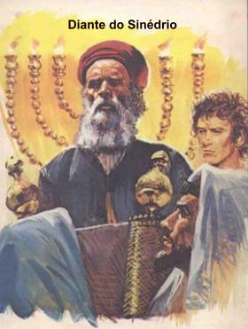
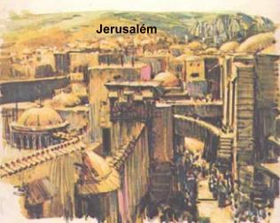
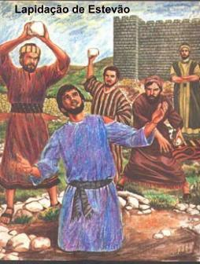
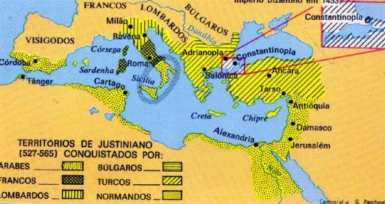

ESTEVÃO, O MÁRTIR
No imenso anfiteatro onde estudavam, os alunos tinham a liberdade de escolher o lugar onde assentar para participar das aulas. Acontecia então, que os simpatizantes de uma determinada seita ou doutrina, geralmente se assentavam em locais próximos uns aos outros. E dessa forma, exatamente no lado oposto a Saulo estava Estevão, um rapaz alto e forte, de olhar alegre e simples, que revelava modéstia e humildade em suas ações. Alguns companheiros simpatizavam com ele, mas outros tinham uma certa implicância com o traje que ele usava e o corte dos cabelos, na altura dos ombros, ao estilo dos essênios. Entretanto, Estevão era um jovem notável, estudante inteligente e exemplar, que sempre revelou uma forte personalidade e por isso mesmo, não dava importância aqueles que menosprezavam a sua aparência. Suas qualidades e virtudes eram visíveis e tão eloquentes, que seu trabalho foi logo reconhecido na Comunidade Cristã, sendo eleito Diácono pelos Apóstolos de JESUS.
Certo dia, assim
que terminaram as aulas, alguns jovens que pertenciam a 
No dia seguinte, durante a aula, Gamaliel ensinava sobre as vantagens do matrimônio judeu sobre a poligamia pagã, quando Estevão solicitou licença para interromper:
- Mestre! Jeová disse a Adão e Eva: "... um homem deixa seu pai e sua mãe, se une à sua mulher, e eles se tornam uma só carne."(Gn 2,24) O marido e uma única mulher para formar uma só carne! Conforme JESUS confirmou no Novo Testamento. (Mt 19,6) Todavia, os judeus possuem mulheres e escravas em quantidade!
Pelas bancadas do anfiteatro ouviu-se um sussurro de vozes agressivas:
- Fora com ele! Manda esse aí conversar com o carpinteiro de Nazaré! Logo ele que quer dar as mesmas lições do Nazareno aqui em Jerusalém? Agora só falta blasfemar!
Saulo levantou-se nervoso e transtornado, com a fisionomia séria correu o olhar em todo anfiteatro... Gamaliel que tudo observava, interveio procurando conciliar os ânimos e perguntou com voz branda e suave:
- Saulo e você, como interpreta o texto?
- Da mesma maneira que interpretam os patriarcas, os profetas e Salomão, respondeu com voz forte e decidida.
Alguns revoltados se manifestaram:
- Que pretende ele com esta afirmação? E que história é essa de Novo Testamento? A verdade de Jeová não é nova e nem antiga, é eterna!
Estevão, com olhar sereno e aparência tranquila, falou com firmeza e doçura:
- Jeová é hoje JESUS, o Messias Crucificado, que morreu e ressuscitou para nos salvar!
Saulo encolerizado, olhando para os condiscípulos escandalizados, perguntou:
- Vocês ouviram? Estevão blasfemou!
E todos em coro, apontando para Estevão, gritaram:
- Blasfemaste! Blasfemaste! Blasfemaste! Gritaram aqueles revoltados.
- Existe aí ou existiu algum nazareno mais puro do que Abraão e Jacob, que tiveram mulheres e escravas? Gritou Saulo possesso de raiva.
Com tranquilidade replicou Estevão:
- JESUS é maior, porque ELE é o FILHO DE DEUS, o próprio DEUS encarnado!
Num relâmpago de cólera, Saulo rasgou sua veste até a cinta, como para desagravar a blasfêmia, e disse:
- Mestre Gamaliel e rapazes de Jerusalém, será que vamos tolerar nesta Escola da Cidade Santa, que se renegue Jeová, os Profetas e se quebrem as tábuas do Sinai?
Todos
os estudantes, contagiados pelo fogo vivo de Saulo, saíram de seus lugares para 
Estevão iluminado pelo ESPÍRITO SANTO fez um longo e minucioso discurso recordando a história de Israel, começando por Abraão quando ele ainda estava na Mesopotâmia, antes de se estabelecer em Haran por determinação Divina; depois falou em Isaac, Jacó, os doze patriarcas, a história de José, Governador do Egito, o nascimento de Moisés, a obra de Moisés a serviço do SENHOR atravessando o Mar Vermelho e levando o povo israelita para a Terra Prometida; sobretudo falou sobre as tábuas da Lei dadas por DEUS a Moisés no Monte Sinai, tudo para lembrar aos presentes, que os ancestrais judeus embora sempre protegidos e beneficiados pelo SENHOR, por diversas vezes se recusaram obedecer a DEUS. E dizia Estevão:
- "Homens de dura cerviz, incircuncisos de ouvido e coração, vós sempre resistis ao ESPÍRITO SANTO! Como foram vossos pais, tais sois vós! Quais Profetas vossos pais não perseguiram? Mataram os que prediziam a vinda do Justo (de JESUS) aquele mesmo do qual agora fostes traidores e homicidas, vós que recebestes a Lei por ministério dos Anjos e não a observastes." (At 7,51-53)

- "Eu vejo o Céu aberto e o FILHO DO HOMEM (JESUS) de pé à direita de DEUS." (At 7,56)
Eles não aguentaram!... Revoltados com as palavras do Diácono, dando grandes gritos e tapando os ouvidos, precipitaram sobre ele, empurraram-no para fora do Grande Conselho e o levaram para fora do muro que cercava a cidade e puseram-se a apedrejá-lo. Conforme o costume, aqueles que iam apedrejar deviam colocar as suas vestes aos pés da testemunha, que naquele episódio era Saulo, porque ali estava como chefe. Estevão suportou o martírio em silêncio. Quando sentiu que estava próximo do fim, invocou:
- "SENHOR JESUS, recebe o meu espírito." E dobrando os joelhos, disse:
- "SENHOR, não faça cair sobre eles o peso deste pecado." E morreu. (At 7,59-60)
Saulo em silêncio, presenciou todo o martírio, dando inteira aprovação a aquele bárbaro e covarde homicídio.
